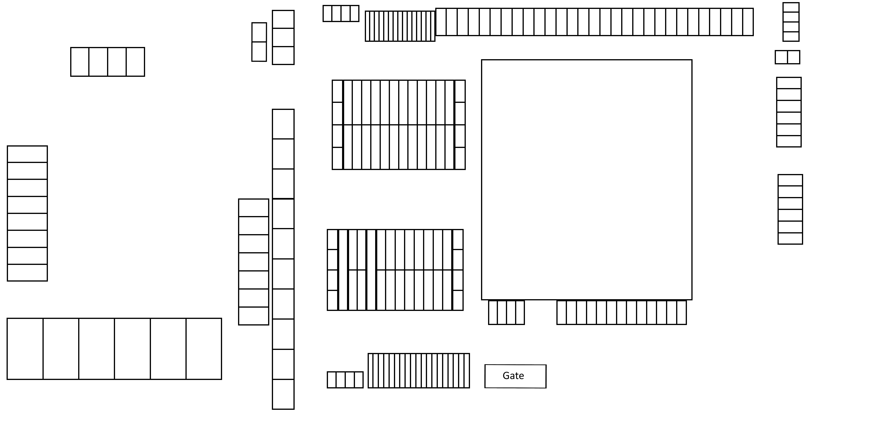

Dylan Keogh
@kexgh
Away
@kexgh
Web applications, IT support, security, investigation and the work in between.
Selected work
Client systems, university projects and independent work across software, infrastructure and security.

Container yard managementSmaller pieces that show the breadth of what I have explored.
Experience
Ongoing independent work for a local business, spanning delivery, support and the systems people use every day.
A little about me
Education and development
Formal study, practical challenges and ongoing independent learning.
Contact
Based in Co. Dublin / Wicklow, Ireland. Open to conversations about technical roles, projects and interesting problems.